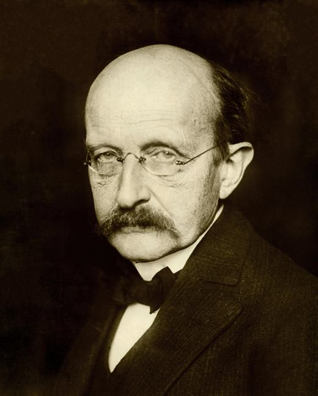
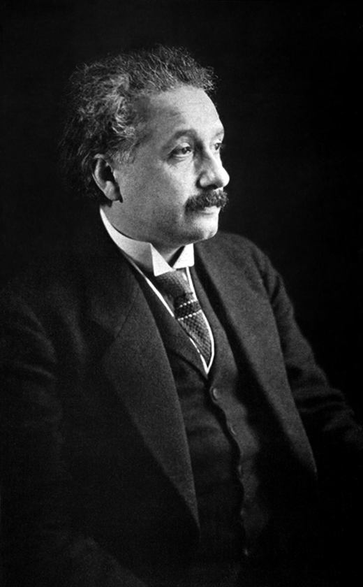
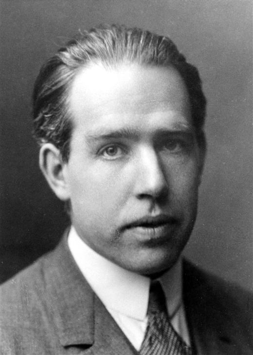
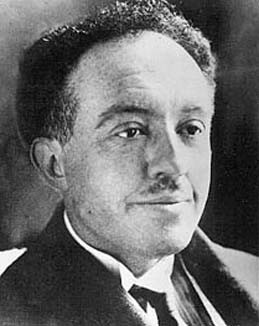
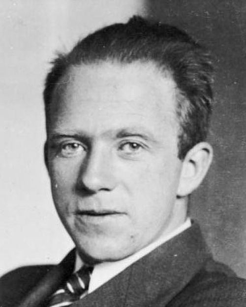
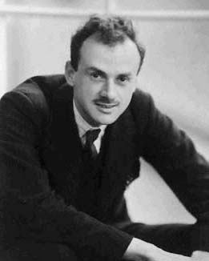
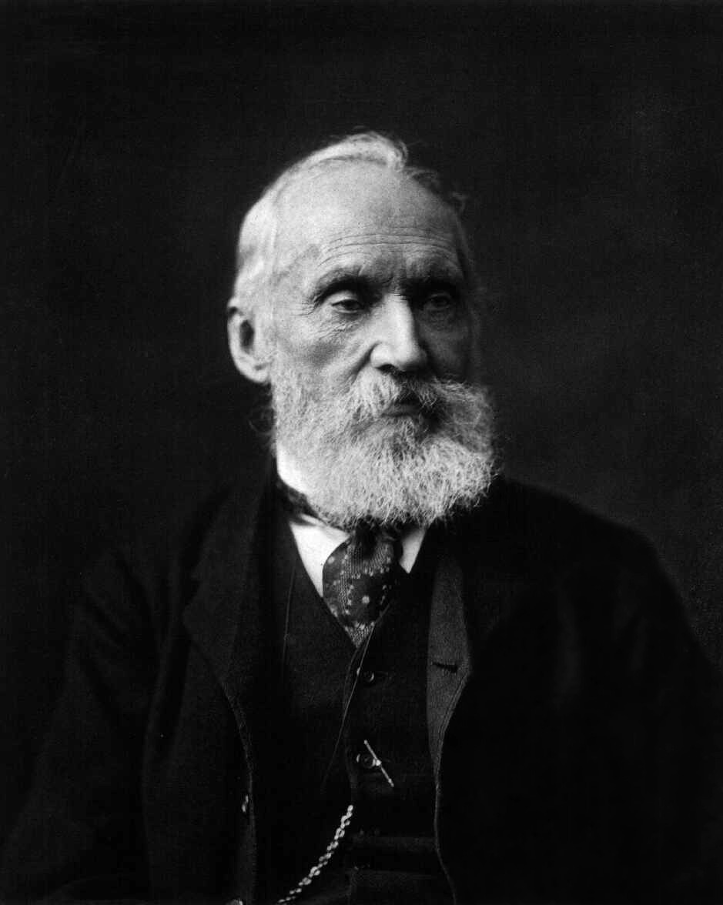
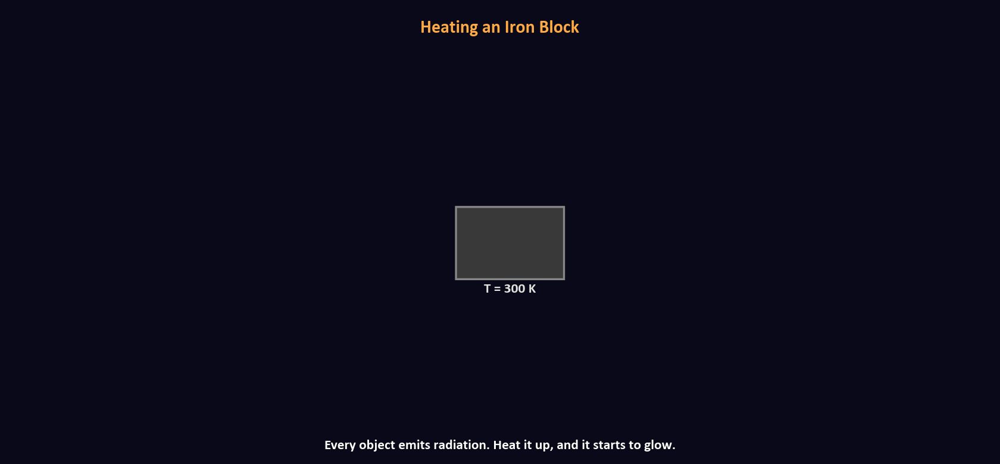

Course · Organic Electronics
Quantum Mechanics Applications
in Organic Semiconductors
Zesheng Liu
Linköping University
Quantum Mechanics Applications in Organic Semiconductors · ←→ or click · F fullscreen
Course outline
12 lectures · 5 phases
01 History of QM — classical physics fails for π-electrons
02 Particle in a box — conjugation length ↔ bandgap
03 Harmonic oscillator — Franck-Condon, Huang-Rhys
04 Tunneling — charge injection, SAMs
05 H atom & orbitals — sp² hybridization
06 Spin & identical particles — OLED singlet/triplet
07 Perturbation theory — intermolecular coupling, CT states
08 Variational method — LCAO, Hückel, DFT bridge
09 Periodic potentials — band vs. hopping transport
10 Electron-phonon coupling — polarons, Marcus theory
11 Interfacial electron transfer — D/A CT, Onsager-Braun
12 Excitons — Frenkel exciton, diffusion, device limits
Today: Lecture 01 — History of Quantum Mechanics
Lecture 1
History of
Quantum Mechanics
From Planck to Dirac: how experiments reshaped physics.
The cast
From Planck to Dirac — 27 years

PPlanck
E quanta

EEinstein
Photons

BBohr
Atom

dBde Broglie
λ=h/p

HHeisenberg
Matrices
 S
SSchrödinger
Wave eq.
 B
BBorn
|ψ|²

DDirac
Formalism
Planck
E=hν
Einstein
Photons
Bohr
Atom
Stern-G.
Spin
Compton
p=h/λ
de Broglie
λ=h/p
H. & S.
QM
Born,Dirac
|ψ|²
Before the quantum revolution
Kelvin's "two clouds" (1900)

Lord Kelvin, 1900
"The beauty and clearness of the dynamical theory... is at present obscured by two clouds."
They looked like technical details at first. Yet one cloud opened relativity, the other opened quantum mechanics.
Cloud I: Ether drift problem
If light is a wave, it should need a medium (ether). Then Earth moving through ether should create a "wind" and shift interference fringes. Michelson-Morley found almost no shift.
A tiny null result challenged space and time themselves.
Cloud II: Blackbody spectrum problem
Classical equipartition predicts too much high-frequency radiation. The math says energy should blow up in the ultraviolet.
A furnace spectrum crisis forced energy quantization.
Classical foundations
Light as a wave — the triumphant classical picture
Double-slit interference
Two coherent sources produce bright and dark fringes — a pattern only waves can make. Particle bullets would leave two strips; waves spread and interfere.
interference fringes
Diffraction & Poisson's bright spot
Waves bend around obstacles — a disk casts a bright spot at its geometric shadow centre. Fresnel's wave equations predicted it; experiment confirmed it.
Electromagnetic theory of light
Maxwell unified electricity, magnetism, and optics. A changing electric field produces a magnetic field — and vice versa — sustaining a self-propagating wave:
The speed matched the known speed of light exactly. Light is an electromagnetic wave.
Experimental confirmation
Hertz generated and detected radio waves in the lab — demonstrating that EM waves are real, travel at $c$, and reflect/refract just like light.
Light is an EM wave. Its nature seemed completely settled. Then the blackbody spectrum raised an awkward question...
Pillar I · Continuity collapses
Blackbody radiation — photons in a cavity
Photons bounce inside, get absorbed and re-emitted at thermal equilibrium.
What is a blackbody?
An ideal absorber/emitter. A small hole in a thermal cavity approximates one perfectly.
The question
How is radiated energy distributed across frequency? Classical physics gives an infinitely wrong answer.
Pillar I · Classical picture
Classical model: atoms as charged oscillators
Vibrating charged atoms radiate EM waves at their oscillation frequency.
What is a blackbody?
An ideal object that absorbs all incoming radiation and re-emits it purely based on its temperature. A small hole in a heated hollow cavity is the best physical approximation.
The classical picture
Cavity walls are composed of charged atoms. Each atom behaves as a harmonic oscillator — when it vibrates, it radiates EM waves at its oscillation frequency $\nu$. All frequencies are allowed.
Equipartition theorem
Classical statistical mechanics assigns the same average energy to every oscillator mode, regardless of frequency:
This prediction leads directly to a catastrophic failure at high frequencies.
Pillar I · Continuity collapses
From furnace glow to ultraviolet catastrophe

Classical failure (Rayleigh-Jeans)
Each oscillator mode gets $k_BT$ — mode density grows as $\nu^2$, so total intensity $\rightarrow\infty$ in the ultraviolet. An infinite prediction for a finite furnace.
Planck's fix (1900): $E = nh\nu$
Quantized energy means high-$\nu$ modes are exponentially suppressed — they're rarely excited. The spectrum peaks and falls, matching every experiment exactly.
Pillar I · Continuity collapses
Planck's fix: quantized oscillators (1900)
Energy comes in packets of size hν.
High-frequency modes are "frozen out."
"An act of desperation"
Planck didn't believe it was real — just a trick. A new constant h = 6.626 × 10⁻³⁴ J·s entered physics.
What to remember
- Energy exchange is quantized
- The continuous picture fails microscopically
- The first pillar has fallen
Pillar II · Waves become particles
The photoelectric effect
Classical wave prediction
- Light is a wave — energy spreads continuously over the surface
- Any frequency should eject electrons, given enough intensity
- Low intensity → time delay while energy accumulates
- Higher intensity → faster ejection, higher KE
Experiments show threshold frequency exists and response is instant. Classical waves completely fail.
Quantum reality (Einstein, 1905)
- Light = discrete photons, each carrying energy $E = h\nu$
- One photon strikes one electron — an all-or-nothing event
- Below threshold $\nu_0$: $h\nu < \phi$ → zero electrons, always
- Above threshold: instant ejection
KE depends on frequency, not intensity. Intensity only sets the number of photons (and thus electrons).
Pillar II
Einstein's explanation (1905)
Observed facts
- Threshold frequency — below it, zero electrons
- Electrons emerge instantly
- Max KE ∝ frequency, not intensity
- Intensity only changes number of electrons
Light = photons. Frequency sets energy per photon; intensity sets how many.
Pillar II
Compton scattering — photon as billiard ball (1923)
Δλ = (h/mec)(1−cos θ). Pure two-body elastic kinematics.
Pillar II
Bohr's atom — discrete levels (1913)
Balmer Hα: 656 nm (red)
Key ideas
- Electrons only in stationary states
- En = −13.6/n² eV
- Transition: hν = Ei − Ef
H emission spectrum
Discrete lines, not a continuous rainbow.
Pillar III · Particles become waves
de Broglie & Davisson-Germer
If photons are particles, electrons must be waves. Davisson-Germer (1927) confirmed it: electron diffraction from Ni crystal.
The thesis
PhD thesis, 1924. Sent to Einstein: "He has lifted a corner of the great veil."
Particles ARE waves. The distinction has collapsed.
Pillar III · Particles become waves
Double-slit experiment
Classical wave theory
- Light is a continuous EM wave — passes through both slits simultaneously
- Each slit becomes a new wave source (Huygens' principle)
- Constructive interference → bright fringe
- Destructive interference → dark fringe
A continuous wave naturally produces an interference pattern. This part classical physics gets right — but it assumes light is a wave.
Quantum: electrons one at a time
- Each electron is a discrete particle — arrives as a single dot
- No two electrons interact with each other
- Yet the pattern that builds up is an interference pattern
- Each electron somehow "went through both slits"
$|\psi|^2$ gives the probability — the electron is in a superposition until it hits the screen.
Which-way detector: interference destroyed
- Place a detector at each slit to record which one the electron passes through
- Knowing the path = collapsing the superposition
- Interference pattern disappears — you get two Gaussian blobs
- It doesn't matter whether you actually look at the detector data
The mere possibility of knowing destroys interference. Measurement is not passive — it changes the quantum state.
Pillar IV · Measurement becomes active
Stern-Gerlach — the beam splits (1922)
Pillar IV · Measurement destroys information
Cascaded Stern-Gerlach experiment
Stage 1 / 3 — Z-axis measurement
Silver atoms have only two spin values along Z: +½ and −½. The Z-field splits them into two beams. We select +z and block the −z beam.
Pillar IV
Spin and the nature of quantum measurement
ms = +½
ms = −½
The prototype two-level quantum system.
The deeper lesson
- No pre-existing classical orientation
- Measurement creates the outcome
- Cascaded SG: select +X, then +Y, then Z splits again → prior-axis info is destroyed
Measurement is active. It changes the quantum state.
Pillar IV · Determinism collapses
Heisenberg's uncertainty principle (1927)
Squeeze position → momentum spreads. Fourier transforms, not clumsy instruments.
1925–1927
A coherent theory emerges
Matrix mech.
No orbits. Only observables.
Wave eq.
Solves hydrogen perfectly.
|ψ|² rule
Probability, not waves.
Δx·Δp ≥ ℏ/2
Structural limit.
Formalism
One language for all.
The result
All four pillars have fallen
A completely new theory — with its own language, logic, and rules.
Summary
What this lecture should leave behind
Quantization
Blackbody, photoelectric, Compton — energy exchange is discrete.
Wave-particle duality
de Broglie, double slit — neither particle nor wave.
Active measurement
Stern-Gerlach — observation changes the state.
Next lecture
Postulates &
Schrödinger Equation
States, operators, eigenvalues, time evolution.
Every concept connected to organic semiconductor physics.